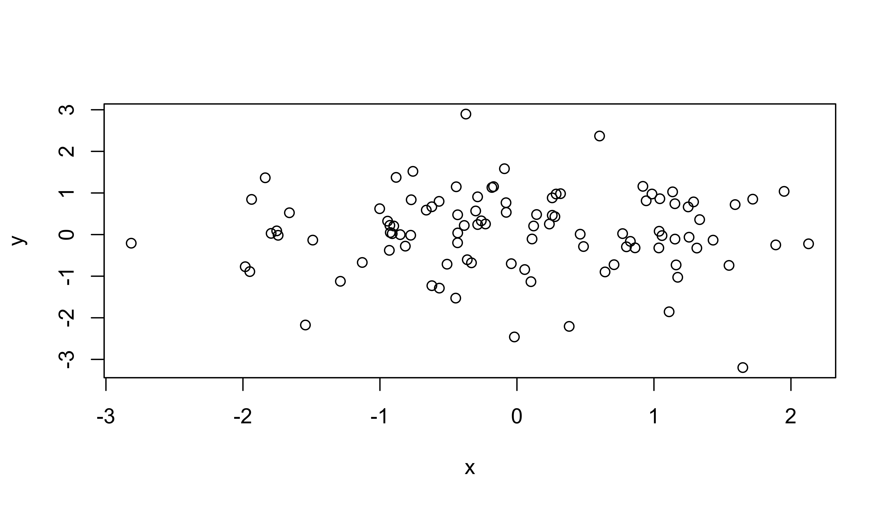
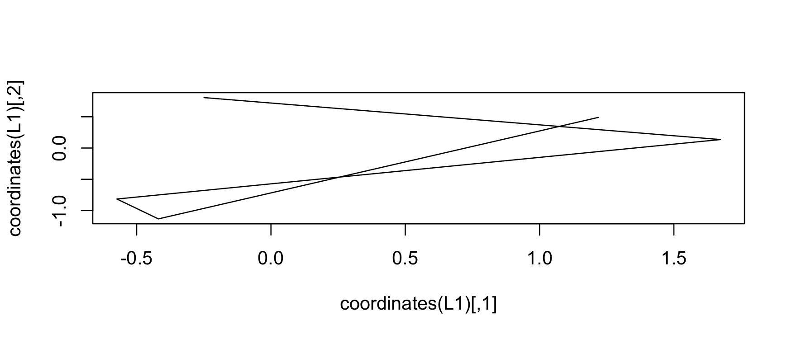
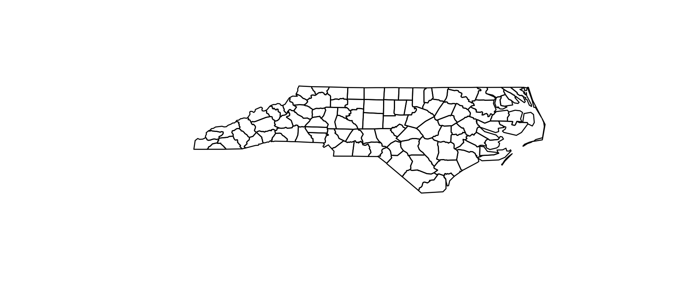
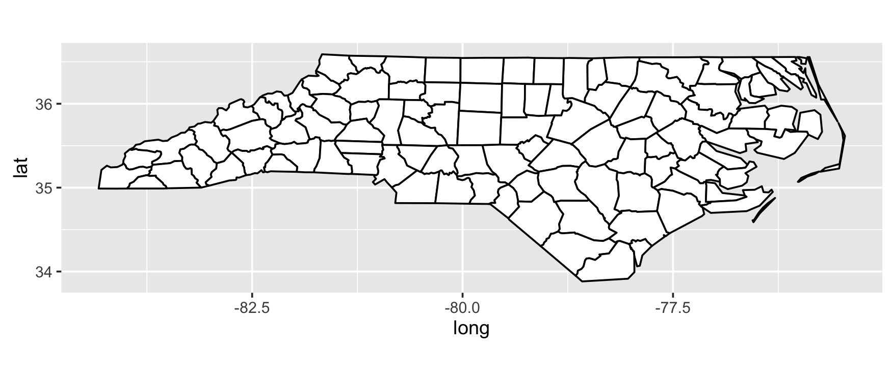
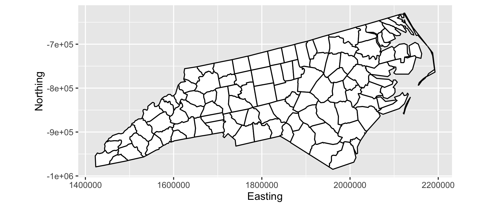
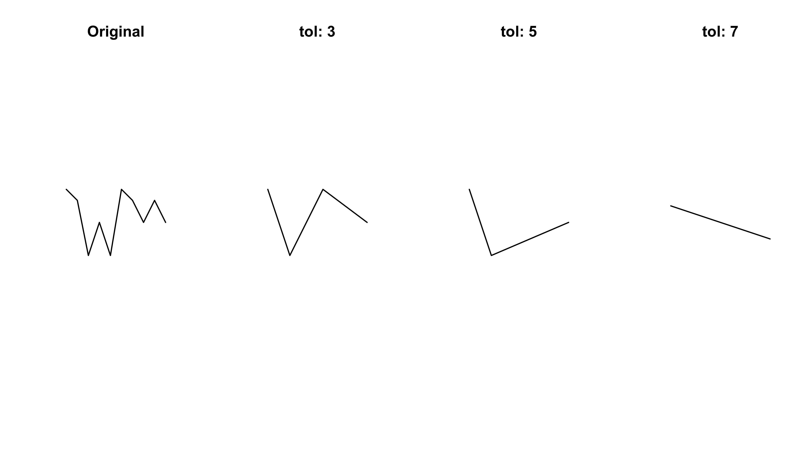
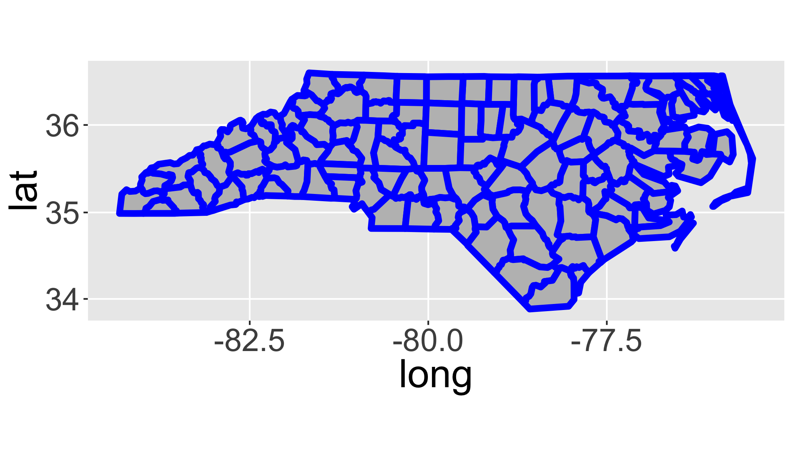
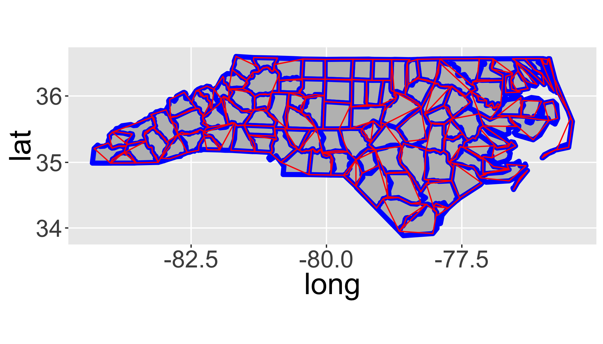
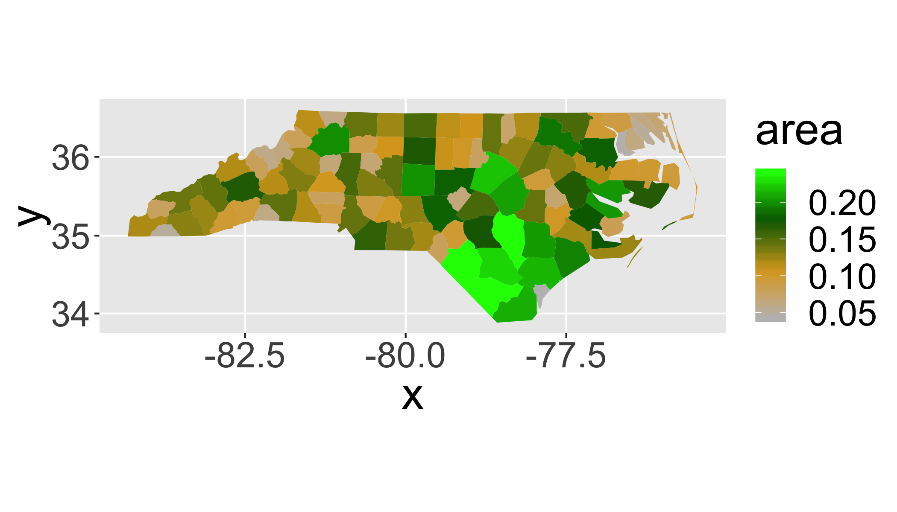
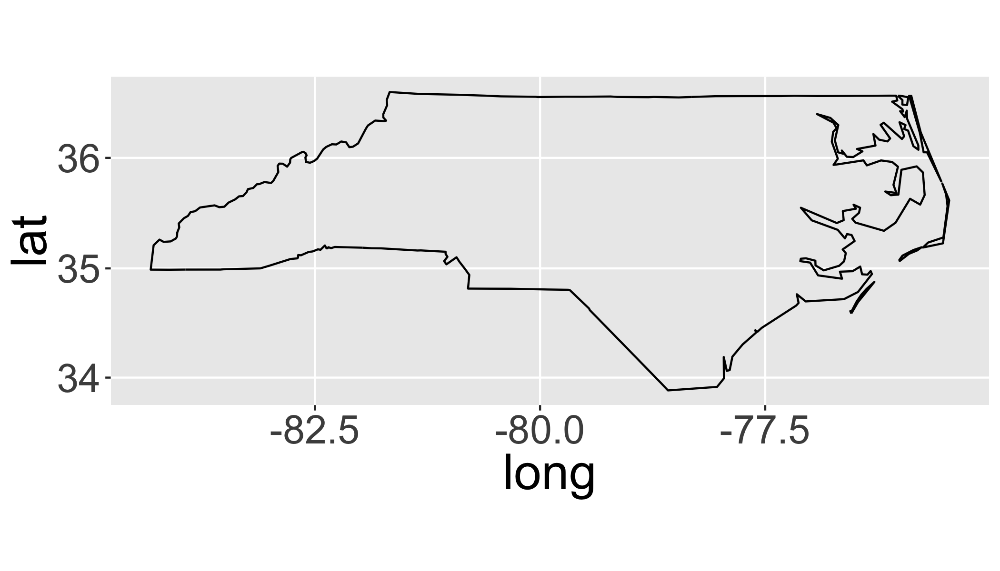

Working with Spatial Data
The R Script associated with this page is available here. Download this file and open it (or copy-paste into a new script) with RStudio so you can follow along.
Setup
Load packages
library(sp)
library(rgdal)
library(ggplot2)
library(dplyr)
library(tidyr)
library(maptools)Point data
Generate some random data
coords = data.frame(
x=rnorm(100),
y=rnorm(100)
)
str(coords)## 'data.frame': 100 obs. of 2 variables:
## $ x: num -0.7755 1.5926 1.038 -0.0797 -1.6608 ...
## $ y: num -0.0159 0.7206 0.08 0.7659 0.5246 ...plot(coords)
Convert to SpatialPoints
sp = SpatialPoints(coords)
str(sp)## Formal class 'SpatialPoints' [package "sp"] with 3 slots
## ..@ coords : num [1:100, 1:2] -0.7755 1.5926 1.038 -0.0797 -1.6608 ...
## .. ..- attr(*, "dimnames")=List of 2
## .. .. ..$ : NULL
## .. .. ..$ : chr [1:2] "x" "y"
## ..@ bbox : num [1:2, 1:2] -2.82 -3.2 2.13 2.9
## .. ..- attr(*, "dimnames")=List of 2
## .. .. ..$ : chr [1:2] "x" "y"
## .. .. ..$ : chr [1:2] "min" "max"
## ..@ proj4string:Formal class 'CRS' [package "sp"] with 1 slot
## .. .. ..@ projargs: chr NACreate a SpatialPointsDataFrame
First generate a dataframe (analagous to the attribute table in a shapefile)
data=data.frame(ID=1:100,group=letters[1:20])
head(data)## ID group
## 1 1 a
## 2 2 b
## 3 3 c
## 4 4 d
## 5 5 e
## 6 6 fCombine the coordinates with the data
spdf = SpatialPointsDataFrame(coords, data)
spdf = SpatialPointsDataFrame(sp, data)
str(spdf)## Formal class 'SpatialPointsDataFrame' [package "sp"] with 5 slots
## ..@ data :'data.frame': 100 obs. of 2 variables:
## .. ..$ ID : int [1:100] 1 2 3 4 5 6 7 8 9 10 ...
## .. ..$ group: Factor w/ 20 levels "a","b","c","d",..: 1 2 3 4 5 6 7 8 9 10 ...
## ..@ coords.nrs : num(0)
## ..@ coords : num [1:100, 1:2] -0.7755 1.5926 1.038 -0.0797 -1.6608 ...
## .. ..- attr(*, "dimnames")=List of 2
## .. .. ..$ : NULL
## .. .. ..$ : chr [1:2] "x" "y"
## ..@ bbox : num [1:2, 1:2] -2.82 -3.2 2.13 2.9
## .. ..- attr(*, "dimnames")=List of 2
## .. .. ..$ : chr [1:2] "x" "y"
## .. .. ..$ : chr [1:2] "min" "max"
## ..@ proj4string:Formal class 'CRS' [package "sp"] with 1 slot
## .. .. ..@ projargs: chr NANote the use of slots designated with a @. See ?slot for more.
Promote a data frame with coordinates()
coordinates(data) = cbind(coords$x, coords$y) str(spdf)## Formal class 'SpatialPointsDataFrame' [package "sp"] with 5 slots
## ..@ data :'data.frame': 100 obs. of 2 variables:
## .. ..$ ID : int [1:100] 1 2 3 4 5 6 7 8 9 10 ...
## .. ..$ group: Factor w/ 20 levels "a","b","c","d",..: 1 2 3 4 5 6 7 8 9 10 ...
## ..@ coords.nrs : num(0)
## ..@ coords : num [1:100, 1:2] -0.7755 1.5926 1.038 -0.0797 -1.6608 ...
## .. ..- attr(*, "dimnames")=List of 2
## .. .. ..$ : NULL
## .. .. ..$ : chr [1:2] "x" "y"
## ..@ bbox : num [1:2, 1:2] -2.82 -3.2 2.13 2.9
## .. ..- attr(*, "dimnames")=List of 2
## .. .. ..$ : chr [1:2] "x" "y"
## .. .. ..$ : chr [1:2] "min" "max"
## ..@ proj4string:Formal class 'CRS' [package "sp"] with 1 slot
## .. .. ..@ projargs: chr NASubset data
subset(spdf, group=="a")## class : SpatialPointsDataFrame
## features : 5
## extent : -0.775517, 1.043132, -2.460687, 0.8615845 (xmin, xmax, ymin, ymax)
## coord. ref. : NA
## variables : 2
## names : ID, group
## min values : 1, a
## max values : 81, aOr using []
spdf[spdf$group=="a",]## class : SpatialPointsDataFrame
## features : 5
## extent : -0.775517, 1.043132, -2.460687, 0.8615845 (xmin, xmax, ymin, ymax)
## coord. ref. : NA
## variables : 2
## names : ID, group
## min values : 1, a
## max values : 81, aUnfortunately, dplyr functions do not directly filter spatial objects.
Your turn
Convert the following data.frame into a SpatialPointsDataFrame using the coordinates() method and then plot the points with plot().
df=data.frame(
lat=c(12,15,17,12),
lon=c(-35,-35,-32,-32),
id=c(1,2,3,4))| lat | lon | id |
|---|---|---|
| 12 | -35 | 1 |
| 15 | -35 | 2 |
| 17 | -32 | 3 |
| 12 | -32 | 4 |
coordinates(df)=c("lon","lat")
plot(df)Examine topsoil quality in the Meuse river data set
## Load the data
data(meuse)
str(meuse)## 'data.frame': 155 obs. of 14 variables:
## $ x : num 181072 181025 181165 181298 181307 ...
## $ y : num 333611 333558 333537 333484 333330 ...
## $ cadmium: num 11.7 8.6 6.5 2.6 2.8 3 3.2 2.8 2.4 1.6 ...
## $ copper : num 85 81 68 81 48 61 31 29 37 24 ...
## $ lead : num 299 277 199 116 117 137 132 150 133 80 ...
## $ zinc : num 1022 1141 640 257 269 ...
## $ elev : num 7.91 6.98 7.8 7.66 7.48 ...
## $ dist : num 0.00136 0.01222 0.10303 0.19009 0.27709 ...
## $ om : num 13.6 14 13 8 8.7 7.8 9.2 9.5 10.6 6.3 ...
## $ ffreq : Factor w/ 3 levels "1","2","3": 1 1 1 1 1 1 1 1 1 1 ...
## $ soil : Factor w/ 3 levels "1","2","3": 1 1 1 2 2 2 2 1 1 2 ...
## $ lime : Factor w/ 2 levels "0","1": 2 2 2 1 1 1 1 1 1 1 ...
## $ landuse: Factor w/ 15 levels "Aa","Ab","Ag",..: 4 4 4 11 4 11 4 2 2 15 ...
## $ dist.m : num 50 30 150 270 380 470 240 120 240 420 ...Your turn
Promote the meuse object to a spatial points data.frame with coordinates().
coordinates(meuse) <- ~x+y
# OR coordinates(meuse)=cbind(meuse$x,meuse$y)
# OR coordinates(meuse))=c("x","y")
str(meuse)## Formal class 'SpatialPointsDataFrame' [package "sp"] with 5 slots
## ..@ data :'data.frame': 155 obs. of 12 variables:
## .. ..$ cadmium: num [1:155] 11.7 8.6 6.5 2.6 2.8 3 3.2 2.8 2.4 1.6 ...
## .. ..$ copper : num [1:155] 85 81 68 81 48 61 31 29 37 24 ...
## .. ..$ lead : num [1:155] 299 277 199 116 117 137 132 150 133 80 ...
## .. ..$ zinc : num [1:155] 1022 1141 640 257 269 ...
## .. ..$ elev : num [1:155] 7.91 6.98 7.8 7.66 7.48 ...
## .. ..$ dist : num [1:155] 0.00136 0.01222 0.10303 0.19009 0.27709 ...
## .. ..$ om : num [1:155] 13.6 14 13 8 8.7 7.8 9.2 9.5 10.6 6.3 ...
## .. ..$ ffreq : Factor w/ 3 levels "1","2","3": 1 1 1 1 1 1 1 1 1 1 ...
## .. ..$ soil : Factor w/ 3 levels "1","2","3": 1 1 1 2 2 2 2 1 1 2 ...
## .. ..$ lime : Factor w/ 2 levels "0","1": 2 2 2 1 1 1 1 1 1 1 ...
## .. ..$ landuse: Factor w/ 15 levels "Aa","Ab","Ag",..: 4 4 4 11 4 11 4 2 2 15 ...
## .. ..$ dist.m : num [1:155] 50 30 150 270 380 470 240 120 240 420 ...
## ..@ coords.nrs : int [1:2] 1 2
## ..@ coords : num [1:155, 1:2] 181072 181025 181165 181298 181307 ...
## .. ..- attr(*, "dimnames")=List of 2
## .. .. ..$ : chr [1:155] "1" "2" "3" "4" ...
## .. .. ..$ : chr [1:2] "x" "y"
## ..@ bbox : num [1:2, 1:2] 178605 329714 181390 333611
## .. ..- attr(*, "dimnames")=List of 2
## .. .. ..$ : chr [1:2] "x" "y"
## .. .. ..$ : chr [1:2] "min" "max"
## ..@ proj4string:Formal class 'CRS' [package "sp"] with 1 slot
## .. .. ..@ projargs: chr NAPlot it with ggplot:
ggplot(as.data.frame(meuse),aes(x=x,y=y))+
geom_point(col="red")+
coord_equal()Note that ggplot works only with data.frames. Convert with as.data.frame() or fortify().
Lines
A Line is a single chain of points.
L1 = Line(cbind(rnorm(5),rnorm(5)))
L2 = Line(cbind(rnorm(5),rnorm(5)))
L3 = Line(cbind(rnorm(5),rnorm(5)))
L1## An object of class "Line"
## Slot "coords":
## [,1] [,2]
## [1,] -0.2266602 1.2389508
## [2,] 0.3506688 -0.6418654
## [3,] 0.5572550 -1.0022352
## [4,] -0.0470298 -1.2565673
## [5,] 0.4880012 0.3211727plot(coordinates(L1),type="l")
A Lines object is a list of chains with an ID
Ls1 = Lines(list(L1),ID="a")
Ls2 = Lines(list(L2,L3),ID="b")
Ls2## An object of class "Lines"
## Slot "Lines":
## [[1]]
## An object of class "Line"
## Slot "coords":
## [,1] [,2]
## [1,] -0.26960460 -1.4876681
## [2,] 0.06619791 -2.3025701
## [3,] 0.95283311 0.4591616
## [4,] -2.44938917 0.2783118
## [5,] -0.81758158 -0.4290159
##
##
## [[2]]
## An object of class "Line"
## Slot "coords":
## [,1] [,2]
## [1,] -0.3868302 -2.2222688
## [2,] -1.4941343 1.1255854
## [3,] -1.2185243 1.2088079
## [4,] 1.1479574 -0.3165272
## [5,] -1.6971661 0.1853546
##
##
##
## Slot "ID":
## [1] "b"A SpatialLines is a list of Lines
SL12 = SpatialLines(list(Ls1,Ls2))
plot(SL12)A SpatialLinesDataFrame is a SpatialLines with a matching DataFrame
SLDF = SpatialLinesDataFrame(
SL12,
data.frame(
Z=c("road","river"),
row.names=c("a","b")
))
str(SLDF)## Formal class 'SpatialLinesDataFrame' [package "sp"] with 4 slots
## ..@ data :'data.frame': 2 obs. of 1 variable:
## .. ..$ Z: Factor w/ 2 levels "river","road": 2 1
## ..@ lines :List of 2
## .. ..$ :Formal class 'Lines' [package "sp"] with 2 slots
## .. .. .. ..@ Lines:List of 1
## .. .. .. .. ..$ :Formal class 'Line' [package "sp"] with 1 slot
## .. .. .. .. .. .. ..@ coords: num [1:5, 1:2] -0.227 0.351 0.557 -0.047 0.488 ...
## .. .. .. ..@ ID : chr "a"
## .. ..$ :Formal class 'Lines' [package "sp"] with 2 slots
## .. .. .. ..@ Lines:List of 2
## .. .. .. .. ..$ :Formal class 'Line' [package "sp"] with 1 slot
## .. .. .. .. .. .. ..@ coords: num [1:5, 1:2] -0.2696 0.0662 0.9528 -2.4494 -0.8176 ...
## .. .. .. .. ..$ :Formal class 'Line' [package "sp"] with 1 slot
## .. .. .. .. .. .. ..@ coords: num [1:5, 1:2] -0.387 -1.494 -1.219 1.148 -1.697 ...
## .. .. .. ..@ ID : chr "b"
## ..@ bbox : num [1:2, 1:2] -2.45 -2.3 1.15 1.24
## .. ..- attr(*, "dimnames")=List of 2
## .. .. ..$ : chr [1:2] "x" "y"
## .. .. ..$ : chr [1:2] "min" "max"
## ..@ proj4string:Formal class 'CRS' [package "sp"] with 1 slot
## .. .. ..@ projargs: chr NAPolygons
Getting complicated

Issues
- Multipart Polygons
- Holes
Rarely construct by hand…
Importing data
But, you rarely construct data from scratch like we did above. Usually you will import datasets created elsewhere.
Geospatial Data Abstraction Library (GDAL)
rgdal package for importing/exporting/manipulating spatial data:
readOGR()andwriteOGR(): Vector datareadGDAL()andwriteGDAL(): Raster data
Also the gdalUtils package for reprojecting, transforming, reclassifying, etc.
List the file formats that your installation of rgdal can read/write with ogrDrivers():
| name | write |
|---|---|
| AeronavFAA | FALSE |
| ARCGEN | FALSE |
| AVCBin | FALSE |
| AVCE00 | FALSE |
| BNA | TRUE |
| CartoDB | FALSE |
| CouchDB | TRUE |
| CSV | TRUE |
| DGN | TRUE |
| DXF | TRUE |
| EDIGEO | FALSE |
| ElasticSearch | TRUE |
| ESRI Shapefile | TRUE |
| Geoconcept | TRUE |
| GeoJSON | TRUE |
| GeoRSS | TRUE |
| GFT | TRUE |
| GME | TRUE |
| GML | TRUE |
| GMT | TRUE |
| GPKG | TRUE |
| GPSBabel | TRUE |
| GPSTrackMaker | TRUE |
| GPX | TRUE |
| HTF | FALSE |
| Idrisi | FALSE |
| KML | TRUE |
| MapInfo File | TRUE |
| Memory | TRUE |
| ODS | TRUE |
| OpenAir | FALSE |
| OpenFileGDB | FALSE |
| OSM | FALSE |
| PCIDSK | TRUE |
| TRUE | |
| PDS | FALSE |
| PGDump | TRUE |
| REC | FALSE |
| S57 | TRUE |
| SDTS | FALSE |
| SEGUKOOA | FALSE |
| SEGY | FALSE |
| SQLite | TRUE |
| SUA | FALSE |
| SVG | FALSE |
| SXF | FALSE |
| TIGER | TRUE |
| UK .NTF | FALSE |
| VFK | FALSE |
| VRT | FALSE |
| WAsP | TRUE |
| WFS | FALSE |
| XLSX | TRUE |
| XPlane | FALSE |
Now as an example, let’s read in a shapefile that’s included in the maptools package. You can try
## get the file path to the files
file=system.file("shapes/sids.shp", package="maptools")
## get information before importing the data
ogrInfo(dsn=file, layer="sids")## Source: "/Library/Frameworks/R.framework/Versions/3.3/Resources/library/maptools/shapes/sids.shp", layer: "sids"
## Driver: ESRI Shapefile; number of rows: 100
## Feature type: wkbPolygon with 2 dimensions
## Extent: (-84.32385 33.88199) - (-75.45698 36.58965)
## LDID: 87
## Number of fields: 14
## name type length typeName
## 1 AREA 2 12 Real
## 2 PERIMETER 2 12 Real
## 3 CNTY_ 2 11 Real
## 4 CNTY_ID 2 11 Real
## 5 NAME 4 32 String
## 6 FIPS 4 5 String
## 7 FIPSNO 2 16 Real
## 8 CRESS_ID 0 3 Integer
## 9 BIR74 2 12 Real
## 10 SID74 2 9 Real
## 11 NWBIR74 2 11 Real
## 12 BIR79 2 12 Real
## 13 SID79 2 9 Real
## 14 NWBIR79 2 12 Real## Import the data
sids <- readOGR(dsn=file, layer="sids")## OGR data source with driver: ESRI Shapefile
## Source: "/Library/Frameworks/R.framework/Versions/3.3/Resources/library/maptools/shapes/sids.shp", layer: "sids"
## with 100 features
## It has 14 fieldssummary(sids)## Object of class SpatialPolygonsDataFrame
## Coordinates:
## min max
## x -84.32385 -75.45698
## y 33.88199 36.58965
## Is projected: NA
## proj4string : [NA]
## Data attributes:
## AREA PERIMETER CNTY_ CNTY_ID
## Min. :0.0420 Min. :0.999 Min. :1825 Min. :1825
## 1st Qu.:0.0910 1st Qu.:1.324 1st Qu.:1902 1st Qu.:1902
## Median :0.1205 Median :1.609 Median :1982 Median :1982
## Mean :0.1263 Mean :1.673 Mean :1986 Mean :1986
## 3rd Qu.:0.1542 3rd Qu.:1.859 3rd Qu.:2067 3rd Qu.:2067
## Max. :0.2410 Max. :3.640 Max. :2241 Max. :2241
##
## NAME FIPS FIPSNO CRESS_ID
## Alamance : 1 37001 : 1 Min. :37001 Min. : 1.00
## Alexander: 1 37003 : 1 1st Qu.:37050 1st Qu.: 25.75
## Alleghany: 1 37005 : 1 Median :37100 Median : 50.50
## Anson : 1 37007 : 1 Mean :37100 Mean : 50.50
## Ashe : 1 37009 : 1 3rd Qu.:37150 3rd Qu.: 75.25
## Avery : 1 37011 : 1 Max. :37199 Max. :100.00
## (Other) :94 (Other):94
## BIR74 SID74 NWBIR74 BIR79
## Min. : 248 Min. : 0.00 Min. : 1.0 Min. : 319
## 1st Qu.: 1077 1st Qu.: 2.00 1st Qu.: 190.0 1st Qu.: 1336
## Median : 2180 Median : 4.00 Median : 697.5 Median : 2636
## Mean : 3300 Mean : 6.67 Mean :1050.8 Mean : 4224
## 3rd Qu.: 3936 3rd Qu.: 8.25 3rd Qu.:1168.5 3rd Qu.: 4889
## Max. :21588 Max. :44.00 Max. :8027.0 Max. :30757
##
## SID79 NWBIR79
## Min. : 0.00 Min. : 3.0
## 1st Qu.: 2.00 1st Qu.: 250.5
## Median : 5.00 Median : 874.5
## Mean : 8.36 Mean : 1352.8
## 3rd Qu.:10.25 3rd Qu.: 1406.8
## Max. :57.00 Max. :11631.0
## plot(sids)
Maptools package
The maptools package has an alternative function for importing shapefiles that can be a little easier to use (but has fewer options).
readShapeSpatial
sids <- readShapeSpatial(file)Raster data
We’ll deal with raster data in the next section.
Coordinate Systems
- Earth isn’t flat
- But small parts of it are close enough
- Many coordinate systems exist
- Anything
Spatial*(orraster*) can have one
Specifying the coordinate system
The Proj.4 library
Library for performing conversions between cartographic projections.
See http://spatialreference.org for information on specifying projections. For example,
Specifying coordinate systems
WGS 84:
- proj4:
+proj=longlat +ellps=WGS84 +datum=WGS84 +no_defs - .prj / ESRI WKT:
GEOGCS["GCS_WGS_1984",DATUM["D_WGS_1984",SPHEROID["WGS_1984",6378137,298.257223563]],PRIMEM["Greenwich",0],UNIT["Degree",0.017453292519943295]] - EPSG:
4326
Note that it has no projection information assigned (since it came from a simple data frame). From the help file (?meuse) we can see that the projection is EPSG:28992.
proj4string(sids) <- CRS("+proj=longlat +ellps=clrk66")
proj4string(sids)## [1] "+proj=longlat +ellps=clrk66"Spatial Transform
Assigning a CRS doesn’t change the projection of the data, it just indicates which projection the data are currently in.
So assigning the wrong CRS really messes things up.
Transform (warp) projection from one to another with spTransform
Project the sids data to the US National Atlas Equal Area (Lambert azimuthal equal-area projection):
sids_us = spTransform(sids,CRS("+proj=laea +lat_0=45 +lon_0=-100 +x_0=0 +y_0=0 +a=6370997 +b=6370997 +units=m +no_defs"))Compare the bounding box:
bbox(sids)## min max
## x -84.32385 -75.45698
## y 33.88199 36.58965bbox(sids_us)## min max
## x 1422262.8 2192698.1
## y -984904.1 -629133.4And plot them:
# Geographic
ggplot(fortify(sids),aes(x=long,y=lat,order=order,group=group))+
geom_polygon(fill="white",col="black")+
coord_equal()## Regions defined for each Polygons
# Equal Area
ggplot(fortify(sids_us),aes(x=long,y=lat,order=order,group=group))+
geom_polygon(fill="white",col="black")+
coord_equal()+
ylab("Northing")+xlab("Easting")## Regions defined for each Polygons
RGEOS
Interface to Geometry Engine - Open Source (GEOS) using a C API for topology operations (e.g. union, simplification) on geometries (lines and polygons).
library(rgeos)RGEOS package for polygon operations
- Area calculations (
gArea) - Centroids (
gCentroid) - Convex Hull (
gConvexHull) - Intersections (
gIntersection) - Unions (
gUnion) - Simplification (
gSimplify)
If you have trouble installing rgeos on OS X, look here
Example: gSimplify
Make up some lines and polygons:
p = readWKT(paste("POLYGON((0 40,10 50,0 60,40 60,40 100,50 90,60 100,60",
"60,100 60,90 50,100 40,60 40,60 0,50 10,40 0,40 40,0 40))"))
l = readWKT("LINESTRING(0 7,1 6,2 1,3 4,4 1,5 7,6 6,7 4,8 6,9 4)")Simplication of lines
par(mfrow=c(1,4)) # this sets up a 1x4 grid for the plots
plot(l);title("Original")
plot(gSimplify(l,tol=3));title("tol: 3")
plot(gSimplify(l,tol=5));title("tol: 5")
plot(gSimplify(l,tol=7));title("tol: 7")
Simplification of polygons
par(mfrow=c(1,4)) # this sets up a 1x4 grid for the plots
plot(p);title("Original")
plot(gSimplify(p,tol=10));title("tol: 10")
plot(gSimplify(p,tol=20));title("tol: 20")
plot(gSimplify(p,tol=25));title("tol: 25")
Use rgeos functions with real spatial data
Load the sids data again
file = system.file("shapes/sids.shp", package="maptools")
sids = readOGR(dsn=file, layer="sids")## OGR data source with driver: ESRI Shapefile
## Source: "/Library/Frameworks/R.framework/Versions/3.3/Resources/library/maptools/shapes/sids.shp", layer: "sids"
## with 100 features
## It has 14 fieldsSimplify polygons with RGEOS
sids2=gSimplify(sids,tol = 0.2,topologyPreserve=T)Plotting vectors with ggplot
fortify() in ggplot useful for converting Spatial* objects into plottable data.frames.
sids%>%
fortify()%>%
head()## Regions defined for each Polygons## long lat order hole piece id group
## 1 -81.47276 36.23436 1 FALSE 1 0 0.1
## 2 -81.54084 36.27251 2 FALSE 1 0 0.1
## 3 -81.56198 36.27359 3 FALSE 1 0 0.1
## 4 -81.63306 36.34069 4 FALSE 1 0 0.1
## 5 -81.74107 36.39178 5 FALSE 1 0 0.1
## 6 -81.69828 36.47178 6 FALSE 1 0 0.1To use ggplot with a fortifyed spatial object, you must specify aes(x=long,y=lat,order=order, group=group) to indicate that each polygon should be plotted separately.
ggplot(fortify(sids),aes(x=long,y=lat,order=order, group=group))+
geom_polygon(lwd=2,fill="grey",col="blue")+
coord_map()## Regions defined for each Polygons
Now let’s overlay the simplified version to see how they differ.
ggplot(fortify(sids),aes(x=long,y=lat,order=order, group=group))+
geom_polygon(lwd=2,fill="grey",col="blue")+
geom_polygon(data=fortify(sids2),col="red",fill=NA)+
coord_map()## Regions defined for each Polygons
How does changing the tolerance (tol) affect the map?
Calculate area with gArea
sids$area=gArea(sids,byid = T)Plot a chloropleth of area
From Wikipedia:
A choropleth (from Greek χώρο (“area/region”) + πλήθος (“multitude”)) is a thematic map in which areas are shaded or patterned in proportion to the measurement of the statistical variable being displayed on the map, such as population density or per-capita income.
By default, the rownames in the dataframe are the unique identifier (e.g. the FID) for the polygons.
## add the ID to the dataframe itself for easier indexing
sids$id=as.numeric(rownames(sids@data))
## create fortified version for plotting with ggplot()
fsids=fortify(sids,region="id")
ggplot(sids@data, aes(map_id = id)) +
expand_limits(x = fsids$long, y = fsids$lat)+
scale_fill_gradientn(colours = c("grey","goldenrod","darkgreen","green"))+
coord_map()+
geom_map(aes(fill = area), map = fsids)
Union
Merge sub-geometries (polygons) together with gUnionCascaded()
sids_all=gUnionCascaded(sids)ggplot(fortify(sids_all),aes(x=long,y=lat,group=group,order=order))+
geom_path()+
coord_map()
Colophon
See also: Raster package for working with raster data
Sources:
- UseR 2012 Spatial Data Workshop by Barry Rowlingson
Licensing: